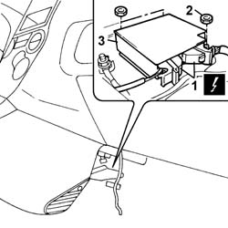

5580C14 air bag ecu - r+r
- Path
- Procedures > 55 ELECTRICAL EQUIPMENT > 5580 SPECIAL ACCESSORIES > 5580C air bag system > 5580C14 air bag ecu - r+r
- Kind
- repair procedure (removal / refitting; the operation number is the code)
- Applies to
- all engines; all production periods
- Interactive page
- https://sloeber94.github.io/elrnDB-fPnd/en/#/2753008
Applies to: all engines; all production periods
Applies to: all engines; all production periods
 Removing
Removing
 Refitting
Refitting1. Disconnect the Air Bag control unit electrical connections.
 | Name | Connector |
|---|---|---|
1 | Air bag control unit | M60A |
| Name | Connector |
|---|---|---|
1 | Air bag control unit | M60B |
2. Undo the nuts securing the Air Bag control unit to the floor.
3. Remove the Air Bag control unit.

Applies to: all engines; all production periods
Refitting
RemovingFollow these precautions:
If a new control unit is being fitted, attach the labels. Remove the removable part of the adhesive label from the new control unit and place it in a special file containing the vehicle details (model, registration date, chassis number) and the serial number of the old control unit. This file should be kept for future checks. A new label is supplied together with the module, to be stuck on top of the existing one. However, it should first be perforated to indicate the month and 14years after the year when the module is fitted (e.g. 2017will correspond to 2003).
Secure the Air Bag control unit and tighten the fixing nuts to the floor.
Connect the Air Bag control unit electrical connections.
| Name | Connector |
|---|---|---|
- | Air bag control unit | M60A |
| Name | Connector |
|---|---|---|
- | Air bag control unit | M60B |
Connect the battery terminals.
Check the operation of the system using the Examiner or another tester.
Topics that link to this page (6)
- K73 SEAT BELT UNFASTENED WARNING LIGHT ON
- K80 AIRBAG FAILURE WARNING LIGHT ON
- K82 PASSENGER AIR BAG DISABLED WARNING LIGHT
- Z095 DIAGNOSIS CANNOT BE STARTED ON THE AIRBAG CONTROL UNIT
- Z096 PRESENCE OF COLLISION DATA (CRASH) WITH INVOLVEMENT OF PRE-TENSIONERS ONLY
- Z097 PRESENCE OF COLLISION DATA (CRASH) WITH INVOLVEMENT OF SIDE AIRBAGS